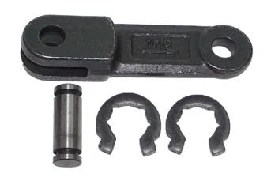

Heavy-duty cane carrier chains, elevator chains, and intermediate conveyor chains designed for the high-moisture, high-load, and abrasive conditions of sugarcane crushing, juice extraction, and sugar refining operations across Thailand and Southeast Asia.

Thailand is one of the world's largest sugar producers, and MPC has deep experience supplying chain solutions to Thai sugar mills. Sugar processing places extraordinary demands on chains — from the heavy impact loads of cane carrier conveyors to the corrosive, wet conditions of juice extraction and the high-temperature requirements of evaporation and crystallization stages.
Our technical team has specified chains for every stage of the sugar production process — from field cane reception through to molasses handling. We understand that sugar mills operate intensively during harvest season and that chain failures translate directly into lost production and revenue.
MPC supplies proven solutions from HS Chain (Korea) for cane carrier and heavy conveying applications, IWIS (Germany) for precision machinery chains, and our proprietary TRIO Chain (P.102mm) for the heaviest conveying applications.
Sugar mills combine heavy loads, wet and acidic conditions, abrasive cane fibre, and the pressure of a finite harvest season — creating a uniquely demanding chain environment.
Cane carrier conveyors handle hundreds of tonnes of sugarcane per hour. The chains must withstand the combined weight of cane, carrier slats, and dynamic loads from the cutting table. We specify chains with adequate breaking loads and significant safety margins for cane carrier duty.
Sugarcane juice, imbibition water, and bagasse moisture create a continuously wet environment across most of the mill. Chains corrode rapidly without appropriate material selection and corrosion-resistant coatings or stainless steel grades.
Bagasse fibre, trash, and cane soil are highly abrasive. They pack into chain joints and sprocket teeth, accelerating wear. We recommend chains with sealed joints and self-cleaning geometries where bagasse packing is a known issue.
Evaporators, vacuum pans, and centrifuges create high-temperature environments that require chains with appropriate heat ratings and lubricants that don't break down or wash out under thermal stress.
Thai sugar mills operate intensively during the cane harvest season (typically November to April). A chain failure during harvest is extremely costly. We help mills plan proactive chain replacement schedules to prevent season-ending breakdowns.
Cane carrier conveyors can be 50–100 metres long, with high chain tensions from the weight of the carried material and the conveyor geometry. Consistent chain pitch and high fatigue strength are critical for reliable long-conveyor operation.
Our most frequently specified chain solutions for sugar mill applications throughout Thailand — from cane reception to molasses handling.
Heavy-duty chains for cane carrier conveyor systems — the backbone of every sugar mill. Available in a range of pitches and breaking loads to match your carrier width and design throughput. Corrosion-resistant grades for wet environments.
Enquire Now
MPC's TRIO Chain — pitch 102mm — is used in sugar mills for the heaviest conveying duties. Its massive cross-section, hardened surfaces, and high breaking load make it ideal for primary cane carrier and bagasse handling systems.
Enquire Now
Korea's HS Chain in corrosion-resistant grades for intermediate conveyors, elevator chains, and juice handling equipment. Trusted by sugar mills across Southeast Asia for reliable service throughout the harvest season.
View HS Chain| Application | Chain Type | Key Requirement | Recommended Brand |
|---|---|---|---|
| Cane Carrier Conveyor | Heavy attachment or forged chain | High breaking load, wet resistance, long pitch | TRIO Chain / HS Chain |
| Cane Leveller Drive | Heavy roller chain (multi-strand) | High torque, shock load resistance | HS Chain / IWIS |
| Bagasse Conveyor | Scraper or attachment chain | Abrasion resistance, fibre-shedding design | HS Chain (abrasion grade) |
| Juice Extraction Elevator | Bucket elevator chain | Corrosion resistance, consistent pitch | HS Chain (CR grade) |
| Juice Heater Drive | Precision roller chain | Heat resistance, accurate pitch | IWIS precision |
| Centrifuge Drive | High-speed roller chain | Balance, low vibration, high speed rating | IWIS (high-speed grade) |
| Molasses Conveyor | Corrosion & sugar-resistant chain | Non-stick design, easy cleaning | IWIS (nickel plate / SS) |
| Bagasse Boiler Feed | Drag chain / scraper chain | High temperature, abrasion resistance | HS Chain / TRIO |
Don't wait until the season starts. Plan your chain replacements now — our team can help with specifications, availability, and pricing.
📞 02 286-5656 · Mon–Sat, 8:30am–5pm